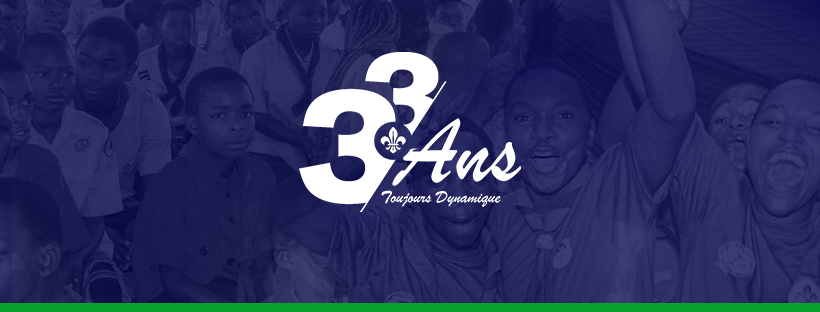

Groupe Scout Don Bosco Ngangi
District Scout Ville de Goma
District Scout Ville de Goma

Bienvenue sur la plateforme officielle du Groupe Scout Don Bosco Ngangi. Depuis plus de 33 ans, nous formons des jeunes responsables, utiles et engagés au service de leur communauté.
Christian Buyihalirwa (Eristale Obstiné)
WhatsApp : +243840661995